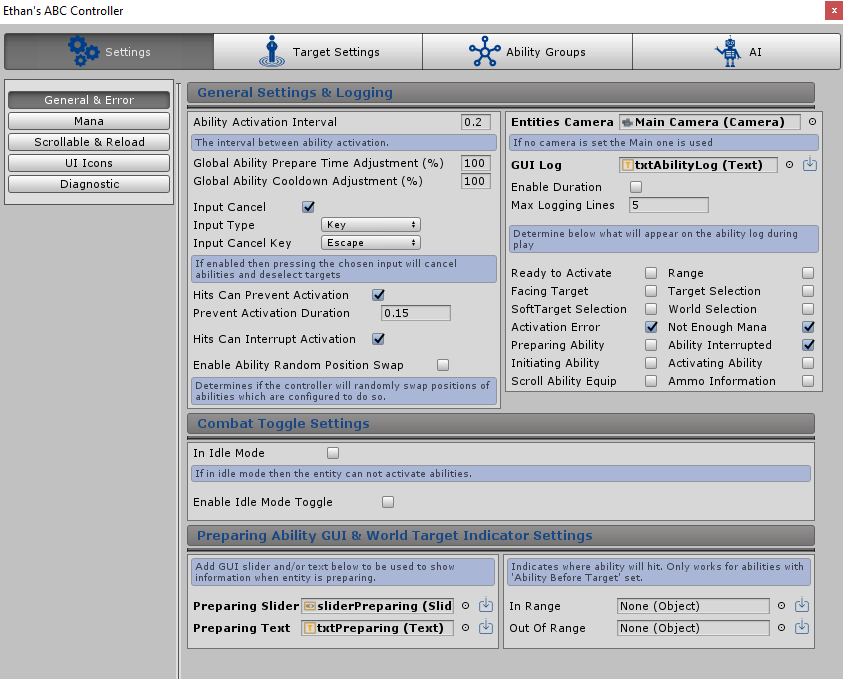

General & Error
Overview
General settings can be configured below which will setup the entity to activate abilities, including activation intervals, error information and log configuration

Ability Activation Interval
The ability activation interval determines the time till another ability can be activated globally, the smaller the number the faster the entity can activate abilities one after another. The setting can take a float value. For example if the entity activates an ability then another one can be activated after the value entered in this setting.
Input Combo Recycle Interval
The interval between the last recorded input before the combination of recent inputs is recycled to start fresh. This setting links directly to the functionality to trigger abilities from a combination of key inputs i.e F > F> B will do a special attack. This setting determines when the inputs recorded will be refreshed ready for a new set of input combinations. For example, if F > F is entered then the player has up until the interval to enter the B to do the special attack, if done after the interval the ability will not trigger and the player has to enter in again F > F > B.
Global Prepare Time Adjustment
This setting is used to speed up or slow down all ability prepare times (how long it takes an ability to initiate) as a percentage. 100% means all abilities will prepare at the normal rate defined for each ability. If for example the number is 50 then all ability prepare times will be halved. The lower the number the less time each ability will prepare for before activating. If higher then prepare times will globally increase. If 0 is entered then it will default to 100. This can be modified during play by the ability effect: Adjust Ability Global Prepare Time.
Global Cooldown Adjustment
This setting is used to speed up or slow down all ability cooldowns as a percentage. 100% means all abilities will cooldown at the normal rate defined for each ability. If for example the number is 50 then all ability cooldowns will be halved. The lower the number the faster each ability cooldown will be. If higher then cooldowns will globally increase. If 0 is entered then it will default to 100. This can be modified during play by the ability effect: Adjust Ability Global Cooldown.
Global Ability Miss Chance
This setting is used to determine the chance for an ability to miss the target. Determines the chance that an ability can miss the target. by offsetting randomly on to the position it was intended to go to. The higher the miss chance the more the entities abilities will miss. Abilities can be set to never miss by enabling the following setting: Ability Can Miss.
Miss Min Offset
The minimum offset which will be applied to the abilities intended target position if the ability is set to miss, the ability miss chance is defined in the setting above. Both negative and positive values can be used
Miss Max Offset
The Maximum offset which will be applied to the abilities intended target position if the ability is set to miss, the ability miss chance is defined in the setting above. Both negative and positive values can be used
Input Cancel
If enabled then key bindings can be setup to trigger cancel events which when pressed will cancel different features depending on the following scenarios, including; Interrupting any ability currently activating, cancel the wait for a target to be selected (interrupting any ability waiting for a target to be chosen) and disabling any active Target, Soft Target or World Target.
If ticked then the following settings will appear:
-
Input Type
-
The type of input expected to trigger the cancel event,
either a hardcoded key can be inserted or a button string which
links to the same string setup in the Unity Input Manager.
-
Input Cancel Key (If ‘Key’ Input Type is selected)
-
A key can be selected from Unity’s predefined drop down. This key is hardcoded.
-
Input Cancel Button (If ‘Button’ Input Type is selected)
-
A string can be entered which should match the same string
setup in the Unity Input Manager. This method allows the end user to configure inputs as per Unity functionality.
Hits Can Prevent Activation
If enabled then the entities ability activation can be prevented for a duration after being hit (from a correctly setup effect being applied).
If disabled then ability activation will never be prevented by a hit. If the box is ticked then the following additional settings will appear:
-
Prevent Activation Duration
-
Requires a float value which determines how long after a hit the entity can once again activate abilities.
Hits Can Interrupt Activation
If enabled then any ability the entity is currently activating can be interrupted after being hit (from a correctly setup effect being applied). If disabled then no abilities being activated by the entity can be interrupted by a hit.
Enable Ability Random Position Swap
If enabled then the ability manager will randomly swap positions of abilities which are setup to do so. More information on the setting to enable abilities to be randomly swapped can be found by clicking the following link: Randomly Swap Ability Position
Entities Camera
The setting requires the camera setup for the entity. This can be the main camera in the scene or another other camera. This camera is used when recording raycasts from camera and working out crosshair positions and applying the camera shake effect. It’s recommend this camera be the one that follows the entity. If no Camera is set then Camera.Main is used instead.
GUI Log
This setting requires an Unity text object which can be created from the Unity menu: GameObject > UI > Text. This object can be placed anywhere on the screen and will display a number of different ability and target events which can be turned on and off, detailed further below. Examples of events include when an ability is ready to cast again, if not enough mana is available to cast the ability of when a target has been selected.
Note: There is an additional setting found when creating abilities which can stop that specific ability from logging information. More information on that setting can be found here: Ability Logging Enabled
If the load default icon  is clicked then the ABC_GUI default prefab will be added to the Hierarchy and the
txtAbilityLog will be added to the setting. This example can be used, referenced or edited.
is clicked then the ABC_GUI default prefab will be added to the Hierarchy and the
txtAbilityLog will be added to the setting. This example can be used, referenced or edited.
If a Unity text object is added the following settings appear:
-
Enable Duration
-
If enabled then the log will appear for a duration everytime text is added. The time is refreshed if new text is
added before the log disappears.
-
Log Duration
-
If enable duration is ticked then this setting will appear which determines how long the log text is shown for.
-
Max Logging Lines
-
This setting determines how many lines of text can be added before the top line is removed. So if this setting was 10 then at any one time
the log will only hold a max of 10 lines. If a new line is added then the oldest line is removed from the top.
GUI Log Filter
Logging filters can be applied which allows the option of picking what type of events are logged. If the box is ticked and enabled then text relating to the box will appear in the log during play.
The options which can be filtered are:
-
Ready To Activate
-
Writes to the log when an ability is ready to activate again
-
Range
-
Writes to the log when an ability is unable to activate on the target due to being out of range
-
Facing Target
-
Writes to the log when an ability requires the entity to face the target to activate and the entity is not
currently facing the target
- Target Selection
- Soft Target Selection
- World Target Selection
-
Activation Error
-
Writes to the log if the ability is unable to activate for a number of reasons i.e a target is required
-
Not enough Mana
-
Writes to the log if the ability is unable to activate due to the entity not having enough mana
-
Preparing Ability
-
Writes to the log when an ability starts preparing
-
Ability Interrupted
-
Writes to the log when an ability has started activating but has been interrupted
-
Initiating Ability
-
Writes to the log when an ability starts initiating
-
Activating Ability
-
Writes to the log when the ability activates (projectile created/raycast sent) etc
-
Also writes to the log when the ability is waiting for a new target to activate
-
Scroll Ability Equip
-
Writes to the log when a scroll ability is equipped and active
-
Ammo Information
-
Writes to the log if a reload is required for the current scroll ability
-
Writes to the log when ammo is required to activate the ability but the entity does not have enough
In Idle Mode
If enabled then the entity will be in ‘Idle Mode’ and can not activate abilities. If configured too then enabling/disabling the setting will play any current ‘equipped’ scroll abilities activation/deactivate animation which can be setup to draw/sheath a sword for example. The tick box will represent the idle mode status during play.
Enable Idle Mode Toggle
If enabled then ABC can be setup to toggle idle mode on and off during play. If ticked the following settings will appear:
-
Toggle Delay
-
Defines how long it takes for the entity to switch in and out of Idle mode. Once the duration is over
the entity is able to activate abilities once again
-
Input Type
-
The type of input expected to trigger the idle toggle event, either a hardcoded key can be
inserted or a button string which links to the same string setup in the Unity Input Manager.
-
Idle Toggle Key (If ‘Key’ Input Type is selected)
-
A key can be selected from Unity’s predefined drop down. This key is hardcoded.
-
Idle Toggle Button (If ‘Button’ Input Type is selected)
-
A string can be entered which should match the same string setup in the Unity Input Manager.
This method allows the end user to configure inputs as per Unity functionality.
-
Deactivate Idle Mode On Ability Input
-
If enabled then whilst in idle mode triggering an ability will quickly take the entity out of idle mode instantly,
this will skip any enabling animations linked to the current scroll ability if setup.
Preparing Slider
This setting requires a Unity Slider object which can be created from the Unity menu: GameObject > UI > Slider. The slider will show the current progress of an ability that is preparing i.e a casting bar. Once the slider reaches the end of the bar then the ability will initiate.
If the load default icon is clicked then the ABC_GUI default prefab will be added to the Hierarchy and the
sliderPreparing object will be added to the setting. This example can be used, referenced or edited.
Preparing Text
This setting which requires a Unity text object which can be created from the Unity menu: GameObject > UI > Text. This object can be placed anywhere on the screen and will display what ability is currently activating. It will also display text when the ability is interrupted.
If the load default icon is clicked then the ABC_GUI default prefab will be added to the Hierarchy and the
txtPreparing object will be added to the setting. This example can be used, referenced or edited.
In Range World Target Indicator
Requires a GameObject which will indicate when an ability is in range when the user is required to select a world space before the ability is activated. Ability requires ‘Ability Before Target’ setup for this to show found under the position and travel tab in the ability manager setting.
The object will appear when the user is required to select a world space after triggering an ability which has been set with ‘Ability Before Target’ and the cursor is in range. Any gameobject can be added the default example is a horizontal quad with a transparent circle on it as an indicator.
If the load default icon is clicked then the ABC_GUI default prefab will be added to the Hierarchy and the ABC_WorldTargetIndicator
object will be added to the setting. This example can be used, referenced or edited.
Out Of Range World Target Indicator
Requires a GameObject which will indicate when an ability is out of range when the user is required to select a world space before the ability is activated. Ability requires ‘Ability Before Target’ setup for this to show found under the position and travel tab in the ability manager setting.
The object will appear when the user is required to select a world space after triggering an ability which has been set with ‘Ability Before Target’ and the cursor is out of range. Any gameobject can be added the default example is a horizontal quad with a transparent circle on it as an indicator.
If the load default icon is clicked then the ABC_GUI default prefab will be added to the
Hierarchy and the ABC_WorldTargetOutRangeIndicator object will be added to the setting. This example can be used, referenced or edited.